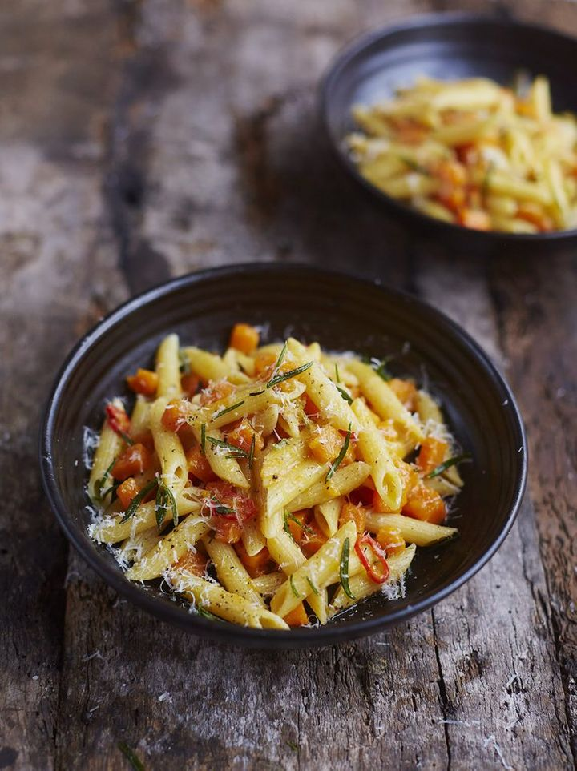
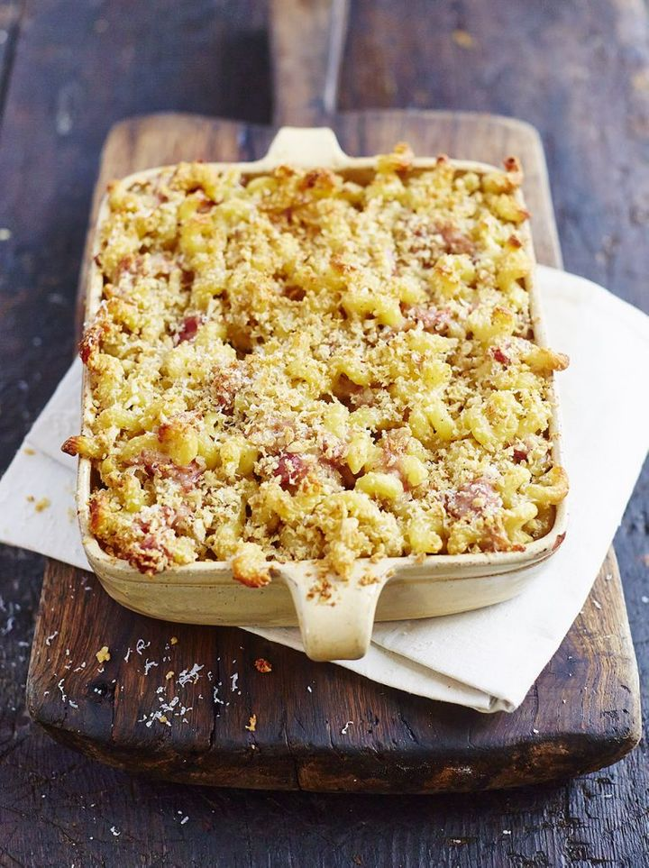

Hello,
Pasta recipes
Comforting, easy and versatile, pasta is the ultimate crowd-pleaser. Whether it’s a rich, slow-cooked ragù on a cold winter’s day or a bright, fresh-flavoured dish to enjoy in the sun, make the most of this amazing store cupboard (or beautifully homemade) ingredient with our huge selection of perfect pasta recipes.
Gennaro's classic carbonara
Put the egg yolks into a bowl, finely grate in the Parmesan,... season with pepper, then mix well with a fork and put to one side. Cut any hard skin off the pancetta and set aside, then chop the meat. Cook the spaghetti in a large pan of boiling salted water until al dente. Meanwhile, rub the pancetta skin, if you have any, all over the base of a medium frying pan (this will add fantastic flavour, or use 1 tablespoon of oil instead), then place over a medium-high heat. Peel the garlic, then crush with the palm of your hand, add it to the pan and leave it to flavour the fat for 1 minute. Stir in the pancetta, then cook for 4 minutes, or until it starts to crisp up. Pick out and discard the garlic from the pan, then, reserving some of the cooking water, drain and add the spaghetti. Toss well over the heat so it really soaks up all that lovely flavour, then remove the pan from the heat. Add a splash of the cooking water and toss well, season with pepper, then pour in the egg mixture – the pan will help to cook the egg gently, rather than scrambling it. Toss well, adding more cooking water until it’s lovely and glossy. Serve with a grating of Parmesan and an extra twist of pepper.
Meatballs & pasta
Wrap the crackers in a tea towel and smash up until fine, breaking... up any big bits with your hands, then tip into a large bowl. Pick and finely chop the rosemary, then add to the bowl with the mustard, minced meat and oregano. Crack the egg into the bowl, then add a good pinch of sea salt and black pepper. With clean hands, scrunch and mix everything up well. Divide into 4 large and balls, then with wet hands divide each ball into 6 and roll into little meatballs – you should end up with 24. Place the meatballs onto a plate, drizzle with oil and jiggle about to coat, then cover and place in the fridge until needed – this will help to firm them up. Pick the basil leaves, keeping any smaller ones to one side for later. Peel and finely chop the onion and the garlic, and trim and finely slice or crumble the chilli. Heat 2 tablespoons of oil in a large frying pan over a medium heat, add the onion and cook for 7 minutes, or until softened and lightly golden. Add the garlic and chilli, and as soon as they start to get some colour add the large basil leaves. Tip in the the tomatoes, breaking them up with the back of a spoon, then add the balsamic vinegar, and season to taste. Bring to the boil, then reduce to a simmer until needed, stirring regularly. Meanwhile, heat 1 tablespoon of oil in another large frying pan over a medium heat, add the meatballs and cook for 8 to 10 minutes, or until cooked through, turning regularly To check if they’re cooked, cut one opening – there should be no sign of pink. Once cooked, add the meatballs to the sauce and simmer while you cook the pasta. Cook the pasta in boiling salted water according to the packet instructions, then drain, reserving a mugful of cooking water. Return the pasta to the pan.
Easy sausage carbonara
Cook the pasta in a pan of boiling salted water...according to the packet instructions, then drain, reserving a mugful of cooking water. Meanwhile, squeeze the sausagemeat out of the skins, then, with wet hands, quickly shape into 18 even-sized balls. Roll and coat them in black pepper, then cook in a non- stick frying pan on a medium heat with ½ a tablespoon of olive oil until golden and cooked through, tossing regularly, then turn the heat off. Finely chop the parsley, stalks and all, beat it with the egg and a splash of pasta cooking water, then finely grate and mix in most of the Parmesan. Toss the drained pasta into the sausage pan, pour in the egg mixture, and toss for 1 minute off the heat (the egg will gently cook in the residual heat). Loosen with a good splash of reserved cooking water, season to perfection with sea salt and pepper, and finely grate over the remaining Parmesan.
Vegetarian pasta recipes
Pasta (and some cheese) makes pretty much any vegetable better, from succulent mushrooms to sweet tomatoes. These veg-filled pastas are sure to satisfy at dinner tonight—no meat required.
Aubergine penne arrabbiata
To make a quick chilli oil, halve... and deseed the chillies. Fill a clean heatproof jar with olive oil, then pour it into a non-stick frying pan on a medium-low heat and add the chillies to confit. Meanwhile, put a pan of boiling salted water on for the pasta. Halve the aubergines lengthways and blanch in the water, covered, for 5 minutes, then lift out, leaving the water on the boil. Carefully scoop the soft chillies into the jar, then spoon in the oil, leaving 2 tablespoons in the pan (keep the jar of chilli oil to add a kick to future meals). Chop the aubergine into 3cm chunks, add to the pan with a pinch of sea salt and black pepper, then turn the heat up to high, stirring regularly. Cook the pasta according to the packet instructions while you peel and finely slice the garlic, then fry with the aubergine for 2 minutes. Pour in the tomatoes, breaking them up with a wooden spoon, and half a tin’s worth of water. Add as many of the chillies as you dare to the sauce and simmer until the pasta is ready, then taste and season to perfection. Drain the pasta, reserving a mugful of cooking water, then toss the pasta through the sauce, loosening with a little reserved cooking water, if needed. Dish up.
Summer veg lasagne
Preheat the grill to full whack...Trim and finely slice the spring onions. Pour the oil from the anchovy tin into a large frying pan over a high heat, then add the spring onions and anchovies (save the rest for another day). Using a garlic crusher, crush the garlic straight into the pan and toss everything together well. Line up the asparagus, trim off the woody ends, then finely slice and add the stems to the pan, reserving the tips for later. Season with sea salt and black pepper, add 1 splash of boiling water and cook for a few minutes, or until softened, stirring occasionally. Add the peas and broad beans to the pan, then pick, roughly chop and add the mint along with the cream. Finely grate in half the lemon zest. Roughly mash and squash everything in the pan using a fork or a potato masher, then season to perfection with salt and pepper. Pour in the stock and bring to the boil, then stir in 1 tub of cottage cheese – the consistency should be creamy and loose. Place a deep 30cm x 35cm roasting tray on a medium heat. Spoon in a quarter of the veggie mixture to cover the bottom of the tray, then top with a layer of lasagne sheets, and a good grating of Parmesan. Repeat the layers with the rest of the veg and pasta, finishing with a layer of lasagne sheets. Mix the remaining tub of cottage cheese with 1 splash of water to loosen, then spread evenly over the top of the lasagne. Toss the reserved asparagus tips in a drizzle of oil, then tip onto the lasagne, pushing everything down with the back of a spoon to compact. Strip over the thyme leaves and finish with a drizzle of oil and a generous grating of Parmesan. Turn the heat under the tray up to high and cook until the lasagne starts to bubble, then place under the grill on the middle shelf for 8 minutes, or until golden and gorgeous. Delicious served with a seasonal green salad.
Danny Devito's family pasta
Place the flour in a large bowl, make a well... in the centre and gradually stir in 200ml of tepid water with a fork until combined. Switch to your hands and knead for 10 minutes, or until pliable and smooth, but not sticky (adding a little extra flour if needed). Cover and rest for 30 minutes. Divide the dough into quarters (approximately 50g chunks), then roll each chunk into a long snake and cut into 1-inch nuggets (about 2½cm). Roll each piece into a mini sausage, and then, using three fingers, press down firmly and drag the dough towards you to make three clear indentations, with pointed ends. Set aside each piece of pasta on a flour dusted tray. Blanch the tomatoes in a large pan of boiling water for 45 seconds. Carefully remove with a slotted spoon to a bowl of ice-cold water, then peel and discard the skins, and roughly chop. Peel and finely slice 4 cloves of garlic and place in a large non-stick frying pan with 3 tablespoons of olive oil. Place over a medium heat and cook until fragrant but not coloured. Add the chopped tomatoes, bring to a simmer and leave to cook for 45 minutes, or until reduced and delicious. Season to perfection with sea salt and black pepper. For the pangrattato, halve and deseed the dried peppers and place in a non-stick frying pan on a medium heat with 3 tablespoons of olive oil. Cook for 5 minutes, or until softened, then remove to a chopping board and finely chop. Peel and finely chop the remaining garlic, then fry in the hot chilli oil for 1 to 2 minutes. Tip in the breadcrumbs and fry for 1 to 2 minutes more until golden and crisp, then add the chopped peppers and stir to combine. Cook the pasta in a large pan of salted boiling water for 3 minutes, or until al dente. Spoon the pasta into the sauce, adding a good splash of cooking water to loosen and a drizzle of extra virgin olive oil. Divide the pasta between plates and top each with a generous handful of the pangrattato. Delicious served with a leafy salad dressed with good-quality balsamic vinegar.
The ultimate guide to pasta shapes
There are over 600 pasta shapes, each with a delicious purpose. Long pasta, short pasta, pasta that can be stuffed, pasta for soups- the uses for pasta are endless! There are some shapes and sizes that are better suited for holding sauces in their ridges, while others are better for baked dishes
Spaghetti
There’s a reason spaghetti is so widely loved: the satisfaction of chewing on a beautiful bundle of noodles, twirled carefully around your fork, is a thing of beauty. Spaghetti is usually served with loose, sweet tomato sauces; no sauce at all, in the case of the famous Roman spaghetti Cacio e Pepe (literally cheese and pepper); or the very light but punchy flavoured broth you get with a good spaghetti vongole.
Penne
Penne are tubular, and cut on an angle to resemble the nib of an old feather quill. Ridges help thicker tomato or vegetable sauces cling to the pasta, ensuring the right ratio with every piece – whether it’s a classic carbonara with a gorgeous veggie twist, or an indulgent affair made with butternut squash and pancetta.
Conchiglie and Orecchiette
These little guys are shaped like shells and ears, respectively, and their cup-like forms help to hold heavier, predominantly vegetable-based sauces made with raw tomato, or broccoli and anchovy down in the deep south of Italy. The sauce packs in the cups nicely, which also means that these shapes are perfect for a pasta bake.
Linguine
Linguini is very like spaghetti, but its flattened shape makes it lie a little more luxuriously on the plate. The extra surface area also helps it hang onto light sauces made with cream or seafood.
Bucatini
Imagine a bigger, fatter spaghetti that’s hollow right through the centre, and you’ve got bucatini: a traditional favourite for thick, ragu-style sauces. The hole means that the gravy from a meaty sauce will make its way into the noodles – Italian genius!
Spirali and fusilli
These pastas are curly like corkscrews. If you really want to differentiate between them, fusilli is a little tighter, but there’s not much in it. They’re great for the same thing: coarse sauces (especially those with chunks of meat) that can get trapped in the screw threads. Gennaro’s recipe for four-cheese pasta bake with hunks of ham is also a great way to use spirali.